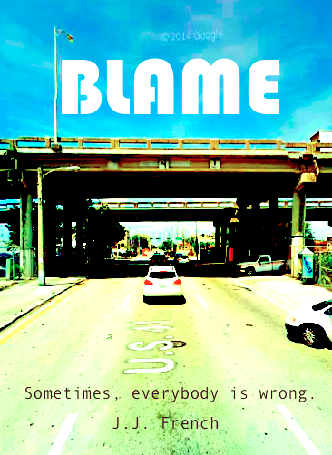

Chelsea still hasn't figured out what she plans to do with her life.
...and she isn't trying to, either.
she's pretty sure that nobody figures it out of their own accord, anyway.
After all, random chance seems to play a much bigger role in where we all end up than anybody bothers giving it credit for. Some of the greatest basketball players in history were recruited in college for...swimming. People do what they do based on who they met and what they learned by random chance. So, Chelsea's approach to life is to meet as many interesting people as possible and see where it goes, rather than try to chart a course for herself and then feel guilty and sad if (but really when) things don't work out as she was foolish enough to expect.
So far, the new approach has taken her to some pretty interesting places.
A writing professor who she met by chance through a previous employer encouraged her to try stand-up comedy when she moved to DC for an internship, and it ended up being a fun way to make friends in the city. Here is one of her comedy sets (skip to 3 minutes in, NSFW NSFW NSFW):
An early spring porch party in Washington, DC with some new friends resulted in someone daring Chelsea to write a story. The story became 80,000 words by accident. Now it's on its way to publication, with a finished sequel and a third book in the works. (the author name is a pen name):

A previous work colleague introduced her to a programming teacher who had developed a programming language to help kids code their own games. He came up with the idea for a tool to create a visual map of the games created in the programming language. After Chelsea had built the tool, the next natural step was to make the same tool capable of mapping programs in other languages. It currently maps one particularly janky version of Ruby, but eventually it will hopefully be able to take any computer code and draw a picture of it: methods, classes, and all. The primitive version is viewable on GitHub: